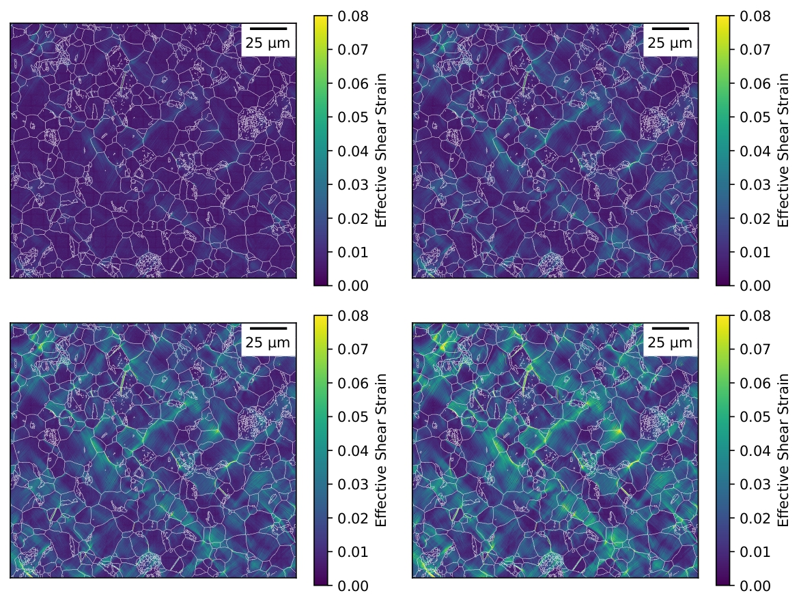
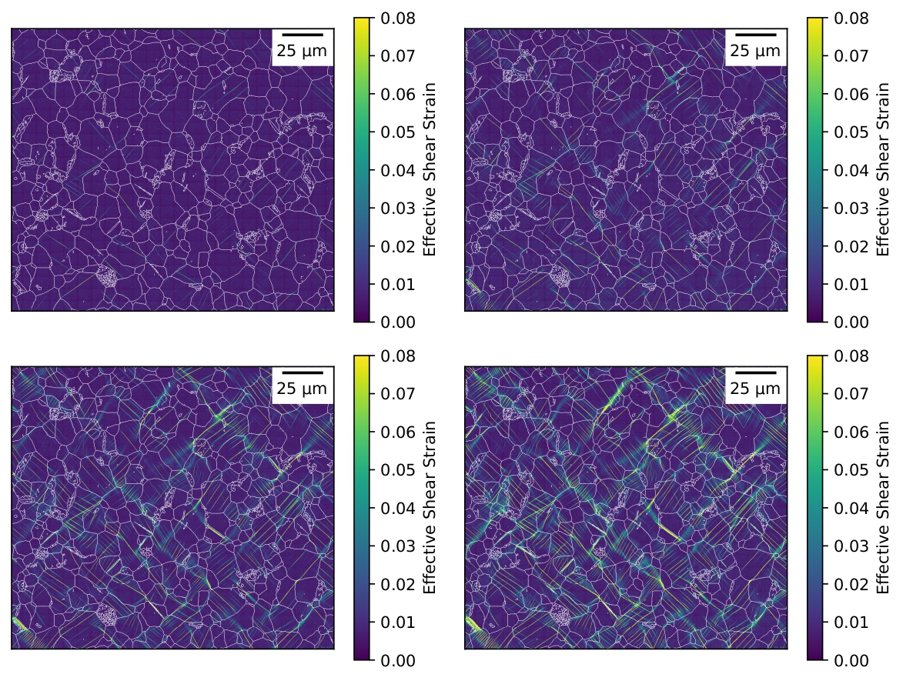

Deformation behaviour of irradiated Zircaloy-4 · MEng, University of Manchester
For my master's dissertation I researched the deformation behaviour and crystal orientation change of hydrides within Zircaloy-4, which holds uranium fuel rods in pressurised water reactors. It is one of the hardest environments, high heat, corrosive and radioactive and all of these factors have an effect on the structure of the metal as well as the inclusions within the material, such as hydrides.
Using high resolution digital image correlation and Electron Backscatter detection, I tracked the strain experienced through the material as it was pulled apart. I compared images and strain data from both an irradiated and non-irradiated sample of Zirconium at different strain steps. The non-irradiated sample stretched more evenly, and strain travelled along grain boundaries as expected. The irradiated sample deformed differently, strain concentrated into sharp, narrow channels along tearing through the grains, with hydride particles clustered along the boundaries creating weak points.
From the strain data, hydride density in the irradiated sample dropped by more than half and the inclusions took on a string like morphology, stretching along grain boundaries instead of being distributed throughout the structure. By the final strain step the irradiated sample exhibited strain values over five times higher than the non irradiated sample. This implied radiation impacts the Zircaloy's ability to uniformly deform and creates strain concentrations around inclusions and strain sliding through grains.
I used an open source Python library made by my supervisor and his team called DefDAP (Deformation Data Analysis in Python) for my analysis. It correlates EBSD and HRDIC data. It allowed me to link strain maps to the samples' microstructures, outlining hydrides, calculating volume fractions, areas, strain distribution and change in crystal orientations.
Download dissertation (PDF) ↗
